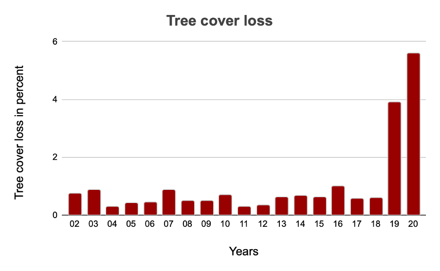

Deforestation in Australia
From 2002 to 2020, Australia lost 58ha of humid primary forest, making up less than 0.1% of its total tree cover loss in the same time period. Total area of humid primary forest in Australia decreased by 0.45% in this time period. From 2001 to 2020, Australia lost 8.47Mha of tree cover, equivalent to a 20% decrease in tree cover since 2000, and 2.25Gt of CO₂e emissions.
This graph depicts the loss in primary forest area since 2002 till 2020.
This graph shows the total loss in tree cover from 2002 till 2020.
The following are the top five areas where deforestation rates were the highest.
- New South Wales - 2.89Mha
- Western Australia - 2.14Mha
- Victoria - 1.57Mha
- Tasmania - 799kha
- Queensland - 651kha
In Australia, the top 2 regions were responsible for 59% of all tree cover loss between 2001 and 2020. New South Wales had the most tree cover loss at 2.89Mha compared to an average of 941kha.